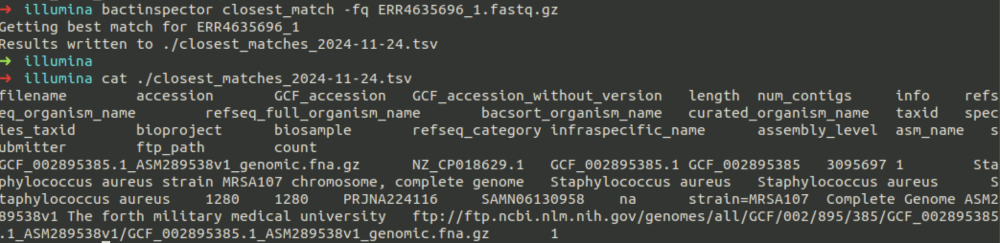

Module 2
Module 2: Data retrieval, Read QC, Genome Assemblies and Assemblies QC
File formats
Read more here:
Connect to your Amazon EC2 instance
Follow the steps in Module 1 to connect to your remote virtual machine.
The next exercise is broadly based on the study https://journals.asm.org/doi/full/10.1128/msphere.00185-23 by Abrudan and Shamanna, 2023
Data retrieval from the European Nucleotide Archive (ENA)
The European Nucleotide Archive (ENA) provides a comprehensive record of the world’s nucleotide sequencing information, covering raw sequencing Data, sequence assembly information and functional annotation.
Access to ENA Data is provided through the browser, through search tools, through large scale file download and through the API.
Download the Data programatically
Connect to your Amazon EC2 Ubuntu instance via ssh.
How to retrieve Data for the samples G18255819 and G18252308 from ENA
Create a directory called Data in /home/ubuntu/
mkdir /home/ubuntu/
Create subdirectories for each of your samples
mkdir /home/ubuntu/Data/G18255819/illuminamkdir /home/ubuntu/Data/G18255819/nanoporemkdir /home/ubuntu/Data/G18252308/illuminamkdir /home/ubuntu/Data/G18252308/nanopore
Download the reads for each sample
cd /home/ubuntu/Data/G18255819/nanopore
wget ftp://ftp.sra.ebi.ac.uk/vol1/fastq/ERR818/004/ERR8187234/ERR8187234.fastq.gz
cd /home/ubuntu/Data/G18255819/illumina
wget ftp://ftp.sra.ebi.ac.uk/vol1/fastq/ERR478/004/ERR4784794/ERR4784794_1.fastq.gz
wget ftp://ftp.sra.ebi.ac.uk/vol1/fastq/ERR478/004/ERR4784794/ERR4784794_2.fastq.gz
cd /home/ubuntu/Data/G18252308/nanopore
wget ftp://ftp.sra.ebi.ac.uk/vol1/fastq/ERR818/005/ERR8187245/ERR8187245.fastq.gz
cd /home/ubuntu/Data/G18252308/illumina
wget ftp://ftp.sra.ebi.ac.uk/vol1/fastq/ERR463/006/ERR4635696/ERR4635696_1.fastq.gz
wget ftp://ftp.sra.ebi.ac.uk/vol1/fastq/ERR463/006/ERR4635696/ERR4635696_2.fastq.gz
Download Data through the browser
- Connect to your virtual machine via the browser of your host machine.
- In your virtual machine, open a browser.
- Navigate to https://www.ebi.ac.uk/ena/browser/home
- Download files associated with the samples G18255819 and G18252308. Downaload the Nanopore and the Illumina reads.
Reads QC
In this part of the exercise, we will use a programme called FastQC.
FastQC aims to provide a simple way to do some quality control checks on raw sequence Data coming from high throughput sequencing pipelines. It provides a modular set of analyses which you can use to give a quick impression of whether your Data has any problems of which you should be aware before doing any further analysis.
The main functions of FastQC are
Import of Data from BAM, SAM or FastQ files (any variant)
Providing a quick overview to tell you in which areas there may be problems
Summary graphs and tables to quickly assess your Data
Export of results to an HTML based permanent report
Run FastQC programatically
To run non-interactively you simply have to specify a list of files to process on the command line.
fastqc somefile.txt someotherfile.txt
fastqc /home/ubuntu/Data/*/*/*
QC your fastq reads through the visual interface
Navigate to /home/ubuntu/Software/FastQC and double click on the FastQC icon.
In the visual interface, open all files produced by FastQC and assess the results, eg ERR4635696_1_fastqc.html
Visualize and interpret the FastQC results. Compare the QC results for Nanopore and Illumina sequence reads
Optional: Unzip the files /home/ubuntu/Data/*/*/*_*_fastqc.zip and produce a script that extracts the information on reads lengths, GC contents etc; plot the results from all samples.

Speciation
Bactinspector is a package to a) determine the most probable species based on sequence in fasta/fastq files using refseq and Mash (https://mash.readthedocs.io/en/latest/index.html) and b) determine the closest reference in refseq to a set of fasta/fastq files.
- Go to sample files /home/ubuntu/Data/ and run Bactinspector using the following command
bactinspector closest_match -fq "*_2.fastq.gz"

- Tidy up the output *.tsv file
tail -n +2 *.tsv| column -t | less -S
cat *.tsv | tr "\t" "~" | cut -d"~" -f2
Eg of a result:
ASM289538v1
GCF_002895385
How do you interpret the results? Look up your results in ENA.
In your browser, type
https://www.ebi.ac.uk/ena/browser/text-search?query=ASM289538v1

Check fields such as:
Assembly Level
Genome Representation
Strain
Count Contig
Contig N50
Total Length
Download the reference genome from the visual reference

Or from the command line.
wget https://www.ebi.ac.uk/ena/browser/api/fasta/CP018629.1 -O - >> GCA_002895385-chromosomes.fasta
Genome assembly
The Velvet assembler
Velvet is an algorithm package that has been designed to deal with de novo genome assembly and short read sequencing alignments. This is achieved through the manipulation of de Bruijn graphs for genomic sequence assembly via the removal of errors and the simplification of repeated regions.
Run Velvet
Find a value of k (between 21 and 99) to start with, and record your choice.
velveth G18252308 KMER -short -separate -fastq /home/ubuntu/Data/G18252308/illumina/ERR4635696_1.fastq.gz /home/ubuntu/Data/G18252308/illumina/ERR4635696_2.fastq.gz
After velveth is finished, look in the new folder that has the name you chose. You should see the following files:
Log
Roadmaps
SequencesThe ’Log‘ file has a useful reminder of what commands you typed to get this assembly result, for reproducing results later on. ’Sequences‘ contains the sequences we put in, and ’Roadmaps‘ contains the index you just created.
Now we will run the assembly with default parameters:
velvetg G18252308Velvet will end with a text like this:
Final graph has ... nodes and n50 of ..., max ..., total ..., using .../... reads

The number of nodes represents the number of nodes in the graph, which (more or less) is the number of contigs. Velvet reports its N50 (as well as everything else) in ‘kmer’ space. The conversion to ‘basespace’ is as simple as adding k-1 to the reported length.
Look again at the folder asm_name, you should see the following extra files:
contigs.faGraphLastGraphPreGraphstats.txt
The important files are:
contigs.fa - the assembly itselfGraph - a textual representation of the contig graphstats.txt - a file containing statistics on each contig
Questions
What k-mer did you use?
What is the N50 of the assembly?
What is the size of the largest contig?
How many contigs are there in the
contigs.fafile? Usegrep -c NODE contigs.fa
Run again velveth and velvetg with another KMER size.
In the classroom, decide you got the best N50 and the lowest number of contigs!
Visualise the assembles using ACT and Artemis
ACT is a Java application for displaying pairwise comparisons between two or more DNA sequences.
ACT can be used to identify and analyse regions of similarity and difference between genomes and to explore conservation of synteny, in the context of the entire sequences and their annotation. It can read complete EMBL, GENBANK and GFF entries or sequences in FASTA or raw format.
Tip: ACT and Artemis are installed here: /usr/share/miniconda/pkgs/artemis-18.2.0-hdfd78af_0/share/artemis-18.2.0-0
Go the the visual interface of your virtual machine.
In the Terminal, type
art &
Artemis should open. Load your contigs.fa file.


From the Graph menu, open GC Deviation (G-C)/(G+C) by clicking on the button next to it.
Rescale the plot for to a more appropriate window size for this zoomed out view: Right click on the graph, and click Maximum Window Size, and select 20000. Then move the graph slider of the right hand side of the screen down to the bottom of the bar.

From the graph you can see that plot generally varies about an upper level and a lower level across the assembly, with shifts occurring at contig boundaries.
Assembly QC with Quast
QUAST stands for QUality ASsessment Tool. It evaluates genome/metagenome assemblies by computing various metrics. The current QUAST toolkit includes the general QUAST tool for genome assemblies, MetaQUAST, the extension for metagenomic Datasets, QUAST-LG, the extension for large genomes (e.g., mammalians), and Icarus, the interactive visualizer for these tools.
In your virtual machine, go to the Chrome browser, and navigate to:
file:///home/ubuntu/Data/G18252308/illumina/G18252308_quast/report.html
Alternatively, navigate to /home/ubuntu/Data/G18252308/illumina/G18252308_quast and double click on report.html

What is the cumulative length of the assembly? Can you check if this expected for a S. aureus genome? Hint: go back to the reference genome you found previously! What was the length of that assembly?
Assembly methods comparison
For assembly of short (Illumina) reads, we will use Unicycler. With short read data, Unicycler acts as wrapper script for the SPAdes assembler, and will produce an assembly with settings optimised for bacteria.
In the command below we:
Allocate 4 CPUs to the assembler
-t 4
Specify the Illumina forward and reverse reads to use
-1 <fastq>and-2 <fastq>
Specify a directory to output files to
-o <dir>
unicycler -t 4 -1 /home/ubuntu/Data/G18252308/illumina/ERR4635696_1.fastq.gz -2 /home/ubuntu/Data/G18252308/illumina/ERR4635696_2.fastq.gz -o ERR4635696.short
For assembly of long reads, Unicycler switches to the long read assembler miniasm - this is a very rapid assembler, but is not particularly accurate, and can often introduce errors and mistakes into its outputs.
In the command below we:
Allocate 4 CPUs to the assembler
-t 4
Specify the ONT long reads to use
-l <fastq>
Specify a directory to output files to
-o <dir>
unicycler -t 4 -l /home/ubuntu/Data/G18252308/nanopore/ERR8187245.fastq.gz -o S_aureus_JKD6159.s100.unicycler.long
For assembly of both long and short reads, Unicycler uses SPAdes for an initial ‘short read’ assembly, and then uses the long reads to attempt to bridge the gaps between contigs from the initial SPAdes assembly. This can work well when the short read data is of high quality/depth but the ONT data is of low depth. However, the ‘bridging step’ can be time consuming, and if the short read assembly is poor, the final assembly may also be. If you have high quality and depth long reads, this may not be the best option.
In the command below we:
Allocate 4 CPUs to the assembler
-t 4
Specify the Illumina forward and reverse reads to use
-1 <fastq>and-2 <fastq>
Specify the ONT long reads to use
-l <fastq>
Specify a directory to output files to
-o <dir>
Note, this method may take over an hour to run on the VMs - check with an instructor before running.
unicycler -t 4 -1/home/ubuntu/Data/G18252308/illumina/ERR4635696_1.fastq.gz -2 /home/ubuntu/Data/G18252308/illumina/ERR4635696_2.fastq.gz -l /home/ubuntu/Data/G18252308/nanopore/ERR8187245.fastq.gz -o ERR8187245.unicycler.hybrid
Compare Velvet and SPADES assemblers
Run SPADES (with Unicycler)
unicycler -t 4 -1 /home/ubuntu/Data/G18255819/illumina/ERR4784794_1.fastq.gz -2 /home/ubuntu/Data/G18255819/illumina/ERR4784794_2.fastq.gz -o ERR4784794.short
View the SPADES assembly metrics in Quast

How do these metrics compare with the results you got from the Velvet assembler?
Genome annotation with Prokka
Run Prokka for one sample
cd /home/ubuntu/Data/
docker run -v $(pwd):$(pwd) -w $(pwd) staphb/prokka:latest prokka --outdir /home/ubuntu/Data/annotations/G18252308 --prefix G18252308 /home/ubuntu/Data/G18252308/illumina/G18252308_kmer51/contigs.fa
Check if the mecA gene was found in the annotated genome.

Once prokka is done, open Artemis and load the .gff file and locate the mecA gene. How many nucleotides does it have?

How to run Prokka on all samples from one folder
Example script: create the following bash file: /home/ubuntu/Data/PROKKA_run/run_prokka.sh
Add the following lines of code:
for sample in `ls /home/ubuntu/Data/all_fastas/*.fasta | sed ‘s/\.fasta//’`
do
echo $sample
output=$(echo $sample | sed -E ‘s#.*/([^/]+)$#\1#’)
echo $output
docker run -v $(pwd):$(pwd) -w $(pwd) staphb/prokka:latest prokka –outdir /home/ubuntu/Data/annotations/${output} –prefix ${output} /home/ubuntu/Data/all_fastas/${output}.fasta
done
Bonus activity
Install Snippy, snp_sites and IQtree and run a SNP tree. See the tutorial here